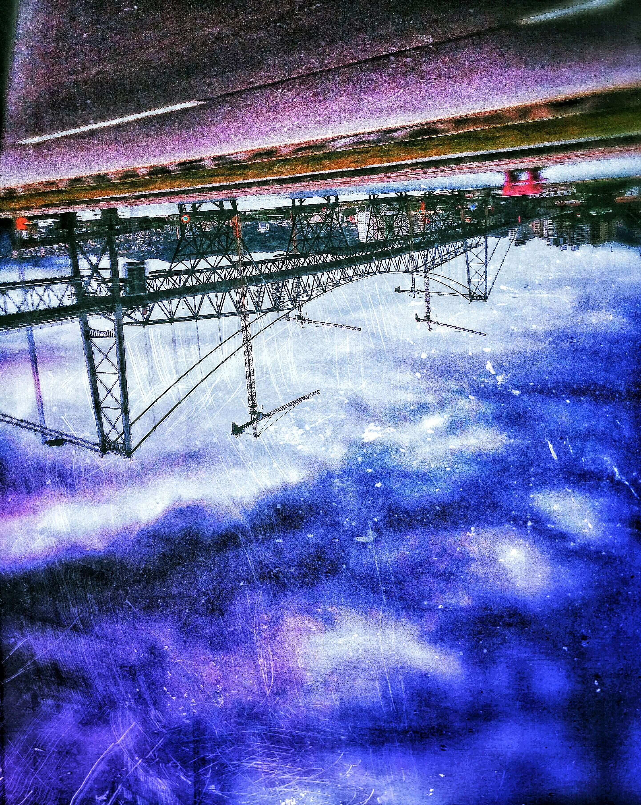

Bem-vindes aos nossos findes e nossos brindes toda fexta-feira
Bem-vindà Sorrianópolis - que é de divisa com Mão José
Fica 2quilômetro de Praroça e 3 de Ralo Lopes
Fica 10quilômetro de Xapeca e 10 de Desciúma
Aqui temos:
- 1. Três ponte e mais que o dobro do dobro de praia
- 2. Metade de metade das praia que dão pra entrar sem sair ramelento
- 3. Um túnel que leva de um lado do morro pro outro
- 4. Um centro de tamanho menor que o menor bairro de Sampa
- 5. Uns parque de tecnologia com 80% de mato
- 6. Uma universidade sem anuidade e mais jacaré que aluno
- 7. Uma passarela quase meio rela que cobre a vista do mar
- 8. Um terminal bem acabado e um outro melhorzinho que o tal
- 9. Uma galera que fuma, uma galera que canta e gente que, por tradição, só reclama
- 10. Uma lagoa pra fazer farofa e uma outra pra pescar bota
- 11. Umas lojinha que vendem demais várias coisa por 10pila
- 12. Uns pescador que pegam tainha em julho
Preços:
Preço do quartinho simplesinho por cada bom dia: 10 muito obrigado (sem café da manhã)
Preço do quarto melhorzinho pra cada boa noite: 35 parabéns (podendo ser parcelado em 12 de nadas sem juros)
Preço do quarto de luxo: 80 dólares + 5 quilos de ova fresquinha (inclui ar condicionado turbo gelo.
Disponível só pra quem tem cartão sorrianopolitano fiel)
Venha com sua família aproveitar o que Sorrianópolis tem de coisa melhor pra oferecer aí. No Hotel Caiaponte!
Sorria com nós! Sorrianópolis!
OBS.: Não realizamos ressarcimento do tempo no trânsito

Foto by Simas